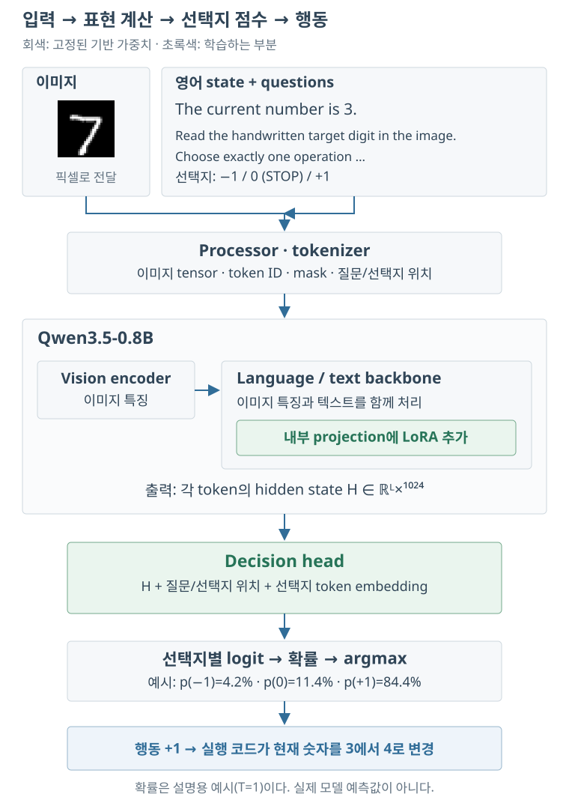
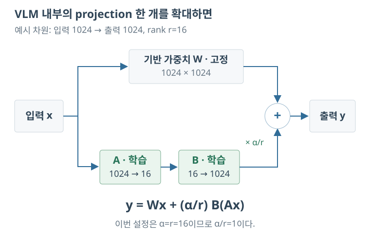
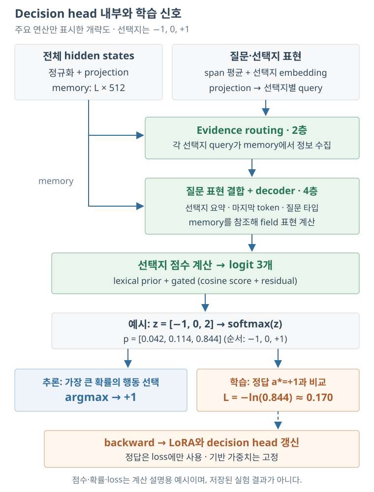
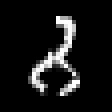

Machine-assisted English translation. Original code, logs, and model inputs are shown as recorded; consult the Korean article if wording is unclear.
Training a Decision Model with MNIST
Training Qwen3.5-0.8B with Unsloth, inspired by Jev
This experiment trains a decision model with Unsloth on a simple MNIST task. The handwritten digit is the target; given the current number, the model chooses +1, 0, or −1. The task lets us examine the model inputs, trainable components, predicted probabilities, and execution outcomes.
The first training run collapsed to a single action. After checking whether the model could memorize a small dataset, we changed the settings and trained it again. This article follows the process and results, with interactive views of recorded batches and test failures.
The trained model is Qwen3.5-0.8B with LoRA and a Clef-style decision head. This experiment did not train Jev itself; distinguish the conceptual background from the model evaluated here.
Experience the trained model yourself ↗ · Enter an image and current number in the browser to run a new prediction on ZeroGPU. Free usage and queue limits apply.
1. Jev and decision model
First, let’s summarize the meaning of the decision model mentioned here. When you ask a general language model a question, it generates an answer as a sentence. On the other hand, the decision model covered in this article scores the options given as input and returns the selected value and the probability of each option. The purpose is to use the results directly as conditional statements or control inputs in other programs.
For example, representing the current situation stateIf three actions are given, the output will be in the following form. The probability below is an example to explain the format.
{
"action": "+1",
"probabilities": {"-1": 0.05, "0": 0.10, "+1": 0.85}
}
here +1is the selected action, and 0.85 is the probability assigned to that action. Since the meaning of the choice is transmitted to the model, the input configuration is different from a classifier that simply sets the class number. However, just because the probability is high does not necessarily mean that the judgment is correct. In fact, there was a high probability of being wrong in this experiment as well.
1.1. The relationship between Jev, Clef, and this experiment
Jevis a decision model provided by TypeSafe AI. The question asks you to choose a choice choice, dealing with binary probability noul, using a set scale score There are types such as: Here, only choice is used.
Clefis a series of decision models released by Cloudflare and is compatible with the Jev API. Unsloth has a function to learn by attaching a Clef-style decision head to an existing language model. In this experiment, we used that function to attach a new head to Qwen3.5-0.8B. Therefore, the numbers below are not the performance of the Clef model deployed by Jev or Cloudflare, but the results of a small model learned directly.
Learning methods also need to be distinguished. It is not a reproduction of the RLCD described by Jev, and in this experiment, supervised learning was performed to give correct behavior and reduce cross-entropy loss. After learning was completed, the probability was corrected using separate data.
2. Formulating the problem with MNIST
To check the training process of the decision model, we created a simple movement problem with MNIST. Aim for the number written on the image t, the current number given as text sLet's say The model must choose between −1, 0, and +1 to bring the current number closer to the target.
For example, if the number in the image is 7 and the current number is 3, +1 is the correct answer. If the current number is 8, select −1, if the current number is 7, select 0. This can be written as follows:
In this case, 0 was defined as the action of maintaining the current number and terminating execution. Even if you reach your goal, if you select +1 or −1, you will move away from the goal again, and if you select 0 from another number, you will stop in the wrong place.
2.1. Classification of image, state, and questions
The model input was structured as follows. The image part is written as a string for display, but in the actual code, the PIL image is transmitted. MNIST's 28×28 image was converted to RGB 112×112 and used. Since image processing is performed inside the processor afterwards, 112×112 should not be interpreted as the final processing resolution inside the model.
{
"images": ["MNIST image → RGB 112×112"],
"state": "The current number is 3.",
"questions": {
"move": {
"type": "choice",
"instructions": "Read the handwritten target digit in the image. Choose exactly one operation that moves the current number toward it. Choose 0 only when equal.",
"criteria": {
"-1": "Subtract one from the current number.",
"0": "Keep the current number and STOP: already equal to the image digit.",
"+1": "Add one to the current number."
}
}
}
}statecontains only the current number. Looking at this part alone, the explanation of what to do seems insufficient, but the meaning of purpose and action is questionsIt is in The model processes images, state, and questions together. Therefore, there is no need to write the same description again in the state.
The correct label of the target number t was not entered into the model input. When learning, calculate the correct behavior using this label gold.moveSave it in and use it for loss calculation. The target label displayed in the batch record below is also information for interpreting the results and is not a value included in the state.
2.2. Create English Sentences
All states and questions in this study were unified in English. state takes one of the four formats below: (image_id + current) % 4Select.
The current number is 3. My counter now reads 3. Start from three. The current value is 3.
In a separate expression check, The counter is currently at 3.was used. The use of four sentences does not mean that natural language expressions have been extensively verified. It is correct to view it as a small test to see whether the results are maintained despite this level of change.
Action based on goals and current numbers
2.3. Behavioral accuracy and episode success rate
Action accuracy measures whether the correct action was selected from a single input. The episode success rate measures whether the same policy stops at the target number when executed repeatedly. In each image, the current numbers 0–9 were examined, and the movement path was also calculated using each number as a starting point.
The two indicators can be quite different. For example, if you always select +1, it will be treated as the correct answer if it is less than the target. So the behavioral accuracy may exceed 40%. However, this policy doesn't choose 0, so it doesn't stop at the goal. This is also the case in which the initial experiment showed an action accuracy of 43.4% and an episode success rate of 0%.
Failure conditions were set as incorrect STOP, repetition of the same state (cycle), deviation from the range of 0–9, and failure to terminate within a maximum of 20 times. Since the model receives only an image and the current number as input and selects an action deterministically, the prediction of each state can be obtained once and then reused to calculate the path.
3. Base VLM and LoRA
As a base model unsloth/Qwen3.5-0.8Bwas used. VLM (vision-language model) is a model that processes images and text together. A representation of the input is calculated through a vision encoder that creates image features and a text processing part. In this experiment, the expression is passed to the decision head to obtain a score for each action.

For example, if there is a 7 in the image and the current number is 3, the model looks at the image and English input together and calculates a score for the three actions. In the picture, +1 has the highest probability, so the executable code changes the current number to 4. In the next judgment, a new current state is added to the same image. If 0 is selected, execution stops, and the evaluation code checks whether the position is the same as the actual target.
The green part of the picture is the trainable components. LoRA participates in VLM internal calculations, and the decision head receives the results and creates scores for each action. LoRA and head are used together when making inferences after learning. The temperature calibration described in Section 7 below can be applied to the inferred probability.
| model | composition | Use in this article |
|---|---|---|
| Qwen3.5-0.8B | hidden 1024, 24 layers, vision encoder | Used for learning and assessment |
| Qwen3.5-2B | hidden 2048, 24 layers, vision encoder | Not tested yet |
The two models are structured using Gated DeltaNet and gated attention together. Although the hidden dimension of the 2B model is larger, how much the accuracy improves and how much the inference time increases in this problem must be measured separately.
3.1. What parameters are learned?
The base weights were fixed and the LoRA parameters and decision head were learned. LoRA is a method of expressing the change to be added to the original weight W as the product of two small matrices. The formula is as follows:
For example, if W is a 1024×1024 matrix, the original number of elements is 1,048,576. If rank r is set to 16, B is 1024×16, and A is 16×1024, the total number of elements in the two matrices is 32,768. Instead of replacing the entire original matrix, these two matrices are learned. For more information LoRA paperYou can refer to .
This setting is r=16, α=16, dropout=0. Looking at the saved adapter settings, the targets are attention, mixer, and MLP projection in the language/text section. The base model was read in 4 bits and BF16 was used for calculation. At this time, not all tensors are 4 bits. LoRA, head, activation, gradient, and optimizer state each require separate memory.

The same input x is divided into two paths. At the top, it is calculated with the existing W, and at the bottom, the change is calculated with small matrices A and B. The value of adding the two results is passed to the next layer. backward goes through this calculation to reach LoRA, but what the optimizer modifies are A and B. W remains the same during learning.
3.2. Structure of decision head
At first, it is easy to think of the decision head as a linear layer with three output values. If you look at the actual implementation, it is more complicated than that. The saved settings are input hidden size 1024, head width 512, 2nd layer evidence routing, 4th layer decoder, 8 attention heads, and feed-forward dimension 2048.
The head uses not only the hidden states of the input sequence, but also the embedding of the span and choice token corresponding to the question and choice. It is a structure in which a query expressing a choice collects information from the input memory, combines it with the question expression, and calculates logit for each choice. The specific calculation is Implementing JointSchemaHeadand Save settingsYou can check it here.

Here, the memory is not a separate storage, but a tensor that projects the hidden states of this input to a width of 512. The query created for each choice collects the necessary information from memory and calculates the score along with the field expression for the question. The actual implementation also includes normalization and residual operations, and only the main connections are shown in the figure.
In the output stage, the purposes of inference and learning are divided. In inference, the action with the highest score is selected. In learning, the loss is calculated as the probability of the correct action, and the error is transmitted to the head and LoRA inside the VLM. There is no process for adding the correct number and correct action to the VLM input to provide the answer.
If you count the tensors in the save file, LoRA has 10,822,656 parameters and head has 27,324,932 parameters. The total is 38,147,588. LoRA is saved as F32, most of the head is saved as BF16, and the three scalars remain as F32. Storage dtype and operation precision also need to be viewed separately.
4. Processing order of Unsloth learning code
Now let's look at the order in which the actual code processes things. The learning entry point is train.pyAnd model creation and prediction are model.pyIt was collected in The explanation below is based on the implementation of Unsloth 2026.10.10 that was installed.
4.1. Model and data preparation
FastDecisionModel.from_pretrainedAfter reading the model and processor get_peft_modelAttach LoRA. The maximum sequence length is 1024, and gradient checkpointing is used. Checkpointing is a method of reducing memory by recalculating backwards instead of storing part of the intermediate activation.
Next, ten rows are created for each image with current=0 to 9. One row contains images, English state, questions, and correct answer actions. build_datasetConverts this into token ID, image tensor, question/choice location, target, etc. At this stage, it was checked to prevent learning from continuing if a row was missing or the sequence was truncated.
4.2. Batch configuration and loss calculation
The collator matches the sequence length of a batch and constructs the attention mask and target. When you run the model once, the logit for each option appears. Here, softmax is applied to obtain the probability p and calculate the cross-entropy for the correct answer behavior.
The lower the probability of the correct action, the greater the loss. Batch loss is the average loss of samples. In backward, the gradient is calculated in LoRA and head, and the fixed base weight is not updated.
4.3. Batch size and gradient accumulation
A microbatch is a batch of samples processed in one forward/backward process, and the optimizer step is the point at which the weights are updated with the collected gradient. Therefore, if cumulative 8 is used in batch 1, forward/backward is performed eight times and then updated once. Even if cumulative 2 is used for batch 4, the number of samples contributing to one update is the same at eight.
In this study, batch 32 and accumulation 1 were used. Since the optimizer is updated for each batch, 600 steps correspond to 19,200 sample exposures. This number should not be confused with the number of unique training data, as the same image or row may appear again.
The optimizer is AdamW's torch fused implementation, with β1=0.9, β2=0.999, ε=1e-8, and gradient clipping norm=1.0. Since DecisionTrainer divides the parameter group of encoder and head, the learning rates of the two can be specified separately. Weight decay only applies to parameters classified as subject to decay.
4.4. Record, Verify, Save
telemetry.pyIn compute_loss(..., return_outputs=True)The prediction and probability of each sample were recorded with the output returned. In other words, the value displayed below is the result of the corresponding learning forward. For the record, these are not values extrapolated back to the final model.
Validation is performed every 100 steps, and when learning is completed, the temperature is adjusted with separate calibration data. Afterwards, LoRA and head were saved and reloaded in a new process for testing. Common usage of Unsloth is: Official InformationPlease refer to . The overall Trainer setup for this experiment is Configuration file extracted from checkpointIt is in
5. Experimental process and final settings
5.1. If learning did not go well the first time
Initially, 600 steps were learned with batch 1 and cumulative 8. The behavioral accuracy for 100 test images was 43.4%, but the episode success rate was 0%. When I checked the prediction, only +1 was selected. In this case, the problem is not easily revealed by only looking at the average loss or behavioral accuracy.
The weights before and after saving were different. Therefore, it could not be concluded that the gradient did not flow at all. Before increasing the data and steps further, I needed to check whether I could properly memorize even smaller problems.
5.2. Check memorization with 30 learning pairs
We selected one image each of the target numbers 2, 5, and 8, and added current 0–9 to each image to create 30 pairs. This was learned repeatedly with batch 30. The LoRA learning rate was set to 2e-4, and the head learning rate was set to 1e-3.
After 50 updates, all 30 training pairs were correct. However, in three different images of the same number, the action accuracy was 76.7% and the episode success rate was 40%. What we confirmed here is that the correct answer can be learned using this input processing and learning code. The result of 100% in the training image cannot be interpreted as performance for the new handwriting.
5.3. Expanded to 2,000 sheets
In the next experiment, we started from a pre-trained base model and used 2,000 training images containing all numbers 0–9. It was not learned from the weights of a small memorization experiment. Ten currents were attached to each image to create 20,000 rows.
If we do this, the percentage of correct answers for STOP is 10%. In order to match the number of learning behaviors for the three behaviors, the rows of the missing behaviors were extracted in duplicate, and the balanced row pool became 27,336. In this study, a total of 19,200 of them were processed, which corresponds to approximately 0.7018 epoch.
- Run ID
- 20261030-010019
- Backbone
- Qwen3.5-0.8B · 4bit / BF16
- LoRA
- r16 / α16 / dropout 0
- Learning rates
- LoRA 2e-4 / head 1e-3
- Batch / accumulation
- 32 / 1 · single GPU
- Updates / exposures
- 600 / 19,200 rows
- Scheduler / warmup
- Cosine / 30 steps
- Optimizer
- AdamW torch fused · clip norm 1.0
- β1 / β2 / ε
- 0.9 / 0.999 / 1e-8
- Weight decay / seed
- 0.01 (decay group) / 3407
- Row pool / epochs
- 27,336 / 0.7018 epoch
- Checkpoint
- 100-step storage, last 2 preserved
- Final selection
- step 600 · best-val not selected
The batch is not the only thing that has changed from the previous failed execution. The head learning rate was changed from 1e-4 to 1e-3, unified with English input, and the number of samples processed during the same 600 steps increased from 4,800 to 19,200. Therefore, it is unclear which change was the main cause of the performance improvement based on these results alone.
5.4. train, validation, calibration, test
Of the 60,000 official MNIST train sheets, a total of 5,000 sheets (500 sheets per number) were separated into the validation pool, and the remaining 55,000 sheets were used as the learning pool. The 2,000 sheets used for actual learning were selected from the order determined by seed 3407. The exact same number was not selected for each number, and the balancing described above was applied to the action row, not the number of images.
| Category | number of images | Use |
|---|---|---|
| Train | 2,000 | Weight learning of LoRA and head |
| Validation | 100 | In every 100 steps, the first 30 photos are evaluated and the last 100 photos are evaluated. |
| Calibration | 50 | Temperature appropriate to the next 50 sheets in the validation pool. |
| Test | 100 → 1,000 | After evaluating the initial 100 cards in the official test, IDs were expanded to 0–999. |
The 100 validation images and 50 calibration images are different images. The final model is a 600 step model, rather than automatically selecting the checkpoint with the best validation performance. Although the test was not used for gradient calculation or temperature fitting, there was preliminary evaluation and repeated results confirmation, so it is not a completely sealed one-time test.
5.5. Execution environment and commands
RTX 5070 Ti Laptop GPU 12GB was used on Windows. The major versions are Python 3.13, torch 2.14.1+cu130, Unsloth 2026.10.10, and transformers 5.17.0. In this environment, some optimized kernels could not be used, so compile was turned off and executed with PyTorch attention. The instruction for this study is as follows.
$env:UNSLOTH_COMPILE_DISABLE='1' $env:UNSLOTH_DECISION_COMPILE='0' .\.venv\Scripts\python.exe train.py --model unsloth/Qwen3.5-0.8B --train-images 2000 --val-images 100 --test-images 100 --steps 600 --validation-steps 100 --batch-size 32 --grad-accum 1 --learning-rate 0.0002 --head-lr 0.001 --trace-batches
The default head learning rate of the code is 1e-4, so 1e-3 must be specified in the command. The full image ID is config.json, the package version is requirements.lock.txt, how to reproduce by moving the folder Reproduction GuideIt is summarized in .
6. Check learning loss and prediction for each batch
Below, you can select Run and check the image, state, question, correct answer, and predicted probability of each batch. Of the 9 runs, a total of 770 microbatches remain with records for each batch, and the number of sample exposures is 20,892. Among these, the main learning records are 600 batches and 19,200 samples.
The blue line in the graph is the loss of each batch, and the orange line is the moving average. If many difficult samples are included in the batch, the loss may increase momentarily even in the late stages of training. These changes can be missed by looking only at the average line, so the two lines are displayed together. When you select a point or enter a batch number, all samples in that forward are displayed.
Since predictions for each batch were not recorded in the initial run, only the interval average loss saved by the Trainer is visible. The parts with no records were left blank. Another difference is that the probability during learning is the value before correction, and the subsequent test result is the output of the saved correction model.
All log / validation / diagnostic records of Trainer
All preserved files from this run
7. Probability calibration
Even if a model gets a lot of correct answers, the output probability does not always match the actual percentage of correct answers. For example, if a large number of cases selected with a probability of 0.9 are collected and about 90% are correct, the probability of that interval can be considered to match the actual result well. The process of adjusting this relationship is called calibration.
This time, temperature scaling was used. If logit is z and temperature is T, the selection probability is calculated as follows.
When T is greater than 1, the probability difference between options decreases, and when T is less than 1, the difference increases. Since all logit is divided by the same positive number, the magnitude relationship does not change. Therefore, the argmax behavior of a question remains the same and only the size of the probability changes.
Temperature T and selection probability
Example logit: [2.0, 0.5, −1.0]
This is an example for explanation with three logits fixed. If you change T, the probability value changes, but the action with the highest probability is maintained.After learning LoRA and head, the temperature was matched to 500 pairs of 50 separate images with 10 currents. In the save settings folded_temperature=0.8812246323and choice type temperature approx. 0.99998546This is recorded. Since the common temperature is reflected in the head weight during the export process, the same temperature should not be arbitrarily applied once more after reloading.
The accuracy recorded in the calibration data was 99%, ECE was 0.01088, and loss was 0.04037. ECE is an indicator calculated by collecting the difference between the average confidence and percentage of correct answers for each probability interval. However, since this data was used to fit the temperature, it cannot be said that the calibration has improved in independent tests based on this value alone. No separate records were kept comparing before and after correction in the same test.
In the actual 1,000-page test, 141 out of 230 incorrect answers had a probability of over 90%. Even after temperature calibration, certain incorrect answers remained. The conclusion that can be drawn from these results is that it should not be assumed that failures can be well filtered out only by the confidence threshold. Larger separate calibration data and independent evaluation are needed to see if there is any improvement.
8. Learning and inference time
Learning something and getting results in a timely manner are two different things. Single-case inference time is especially important when decisions are made repeatedly on actions, as in this example. Therefore, along with the learning time, the inference time of the storage model was measured separately.
8.1. Training time and GPU memory
The Trainer execution time for this study was 1,249.30 seconds, approximately 20.82 minutes. This includes periodic validation time. It is not a value that measures only pure forward/backward time. Dividing 19,200 sample exposures by this time is approximately 15.37 samples/s.
The maximum allocated memory recorded by PyTorch was 2.76 GiB, and the reserved memory was 3.12 GiB. allocated is the memory used by the tensor, and reserved is the area secured by the PyTorch memory manager. Both are different from the overall device usage, which includes other programs and drivers.
To check the batch effect, when comparing the same 96 samples with valid batch 8, batch 1 × cumulative 8 was 3.20 samples/s, and batch 4 × cumulative 2 was 13.22 samples/s. It is about 4.13 times faster. However, in the separate sweep of batch 8–128, the throughput did not increase significantly around 19 samples/s. Batch 256 did not obtain stable measurement values. Therefore, continuing to increase batches just because there is memory left was not of much help in this environment.
8.2. Single transaction latency and batch throughput
In the inference measurement, the model was loaded first and then warm-up was performed five times for each mode. CUDA was synchronized so that the time was not recorded before the GPU operation was completed, and a single operation was repeated 100 times and the others 20 times each.
| measurement mode | average ms/call | p50 / p95 ms | judgment/second | Peak allocated |
|---|
The average of the single public prediction was 94.03ms, p50 was 93.33ms, and p95 was 97.97ms. The image was pre-read and resized, and processor, tokenization, and API output conversion were included in the measurement. Model loading, disk read, and network time were excluded.
Batch logits measurements include collate, device transmission, forward, and output conversion, excluding encoding. The B32 pipeline, including resizing and encoding, averaged 704.24ms and approximately 45.44 decisions/s. Since the batch experiment repeated the same batch of inputs, it did not measure the server's simultaneous request processing performance.
If you divide 704ms by 32, it becomes about 22ms per transaction, but this value is a conversion of throughput. This does not mean that when you make a request, you will receive a response 22ms later. It is better to look at single latency for real-time control, and batch throughput when evaluating a lot of data at once.
For reference, the 1,000-page extended evaluation took approximately 228.16 seconds. This time excludes model loading, but includes single and batch parity checking, encoding, aggregation and recording. Service delay times, including power, money costs, cold start, and network, were not measured at this time.
9. Test results and failure cases
After learning, 100 randomly selected official test images were initially evaluated. Afterwards, the evaluation scope was expanded to identify more failure cases, and due to time constraints, 1,000 tests with test IDs 0–999 were ultimately used. The results below are for these 1,000 sheets.
| indicators | result | unit of calculation |
|---|---|---|
| behavioral accuracy | 97.70% | 9,770 / 10,000 judgments |
| Episode Success Rate | 93.62% | 9,362 / 10,000 starting point |
| Image where every action is correct | Chapter 917 | current 0–9 per image |
| One or more incorrect images | Chapter 83 | Out of a total of 1,000 sheets |
There were 230 incorrect behavioral responses, but there were 638 failed episodes. There were 434 cases of stopping at an incorrect number, 203 cases of repeated movement, and 1 case of out of range. If you do something wrong in one state, several starting points passing through that state can fail together, so the two numbers do not have to be the same.
9.1. Errors based on numbers and current state
When the goal was 8, the action error rate was high at 5.28% and the episode failure rate was 14.61%. In target 2, they were 3.97% and 10.17%, respectively. In particular, under the condition that both the target and current numbers were 8, the number of cases in which STOP was not selected was 12/89, or 13.48%. Overall, we needed to check not only the actions that brought us closer to the goal, but also the conditions under which we would stop once we got there.
The rows are the target numbers, and the columns are the current numbers. Each cell represents the error rate (%) for that condition. When you select a cell, images matching that condition are displayed below. If you hover your mouse over it, you can see the number of incorrect answers and the total number.
9.2. Behavior observed in individual images

In the image above, current=0, +1 is selected for 1, 0 is selected for 2, and −1 is selected for numbers larger than that. In other words, it was the same as the correct policy when the goal was 2. Full prediction for image 582You can check it here. Image number 926, on the other hand, behaved like a policy where the correct answer label was 2 but the target was 8.
In contrast, in image 87, +1 was selected from current=6 and −1 was selected from 7, and 6 and 7 were repeated. Since it behaved correctly in some of the remaining states, it is difficult to explain that it was simply misread as a different target number.
Of the 83 error images, 27 were exactly the same as the correct policy for one other number, and 56 were not identical to the correct policy for any one number. This has been confirmed through output actions up to this point. This cannot be immediately confirmed as a recognition error in the vision encoder or a number comparison error. To determine the internal cause, additional tests, such as those that only evaluate number recognition, are needed.
9.3. When images and sentences are changed
In a separate 20-page test, new English expressions were written on the same image, the images were mixed, or replaced with a blank image. The results are as follows:
| input | behavioral accuracy | Episode Success Rate |
|---|---|---|
| original input | 98.0% | 91.0% |
| new english expression | 97.5% | 90.0% |
| shuffle images | 56.5% | 5.0% |
| blank image | 46.5% | 10.0% |
Performance decreased when the image was changed, so at least in this test, it can be seen that the model did not act by looking at the text only. However, since it is a 20-page test, it is not enough to expand to conclusions about new handwriting or sentences in general.
The 1,000-page evaluation is also not a random sample, but the first part of the official test, and partially overlaps with the previous 100-sheet evaluation. Additionally, the ten judgments derived from one image are related to each other. Therefore, it should not be interpreted as an evaluation of 10,000 independent samples.
Test summary and analysis source JSON
10. What was confirmed during the experiment and remaining problems
The first thing that was helpful in this experiment was the process of checking whether a small dataset could be memorized. Initially, the data and steps were increased when learning was not going well, but it was difficult to tell whether it was an input processing problem or a learning setup problem based on the results alone. After confirming that we could learn 30 pairs, we had evidence that we could at least sufficiently lower the loss in the same code.
However, not all causes of initial failure have been found. In this training, the head learning rate, batch, number of sample exposures, and input language were changed together. To know the impact of each, you need to change each item one by one while matching the sample order and number of exposures. It was also confirmed that the two runs should not be compared with equal learning amount just because they are the same 600 steps.
In the evaluation, it was necessary to look at both the action accuracy and the success rate of the entire route. Looking at the behavioral accuracy of 97.70%, it seems like most of the problems have been solved, but in reality, the goal was reached at 638 starting points and could not be stopped. In particular, the meaning of stopping errors and repetitive movements was revealed only when the execution results were directly checked.
10.1. Additional experiments to try
Next, it is necessary to first compare the head learning rate by dividing it into 1e-4 and 1e-3 and check the batch effect at the same number of exposures. You should also repeat with multiple seeds to see how much the performance difference is maintained. If you want to suspend execution based on probability, it would be better to set a threshold from separate larger calibration data and measure the incorrect response rate and the processable rate together in an independent test.
The sizes of the base models can also be compared. The purpose is to check whether the error reduction when changing to Qwen3.5-2B is enough to bear the increase in inference time and memory. However, since this problem can be solved by adding a simple comparison operation after number recognition, it is appropriate to have a baseline that combines a CNN for MNIST and a numeric comparator. There is no basis to say that VLM is a better method based on these results alone.
After looking at the failure image and supplementing the training data, a new test is needed. If you have already analyzed the error and re-evaluated the test used for correction, the meaning will be different from the performance on the data you see for the first time. You can then check for new handwriting, image modifications, and other English expressions. These items are plans that have not yet been implemented.
10.2. My impressions of using the decision model
From an implementation perspective, it was convenient that the output was returned with a set choice and probability. There was no need to create code to extract actions from answer sentences, and loss, confidence, and execution path could be recorded in the same format. Being able to describe the meaning of inputs and options in text can also be useful when changing the configuration for another problem.
On the other hand, even though the output format was constant, the accuracy or consistency of behavior was not guaranteed. There was a high probability of incorrect answers, and in one image, inconsistent policies were produced depending on the current number. This MNIST example can be viewed as an experiment that confirms the process of learning and observing a decision model. Comparison of accuracy and speed with other methods and generalization to new options are left to future experiments.
11. Code and experimental data
GitHub repositoryYou can receive the code and final model together from . Guide to downloading and running models and Scope of preservation of public versionPlease refer to . Logs and graphs of past executions are maintained, and weights are provided only for the final model.
The code, settings, learning records, and evaluation results used in the text are collected in the same folder. The original file for each run can also be opened from the file list in Section 6. The code and data structure are summarized in the following document.
- Folder organization and execution method
- train.py, model.py, telemetry.py, full_test.py
- Environment configuration and reproduction commands / Full Trainer Settings
- A prompt summarizing the experiment request / Change in scope of request
- Log field descriptions / Record scope and missing data
- 1,000 pages detailed report
- References and Licenses / Full file and SHA-256 list
The batch explorer and test screen read and display the saved results. When opening a page, no new GPU inference is executed. The public version includes only the adapter/head of the final implementation (20261030-010019). It does not provide historical weights, optimizer checkpoints, or batch logs that were not collected from the initial run, and the code is a snapshot of the last state rather than all versions at the time of each run.